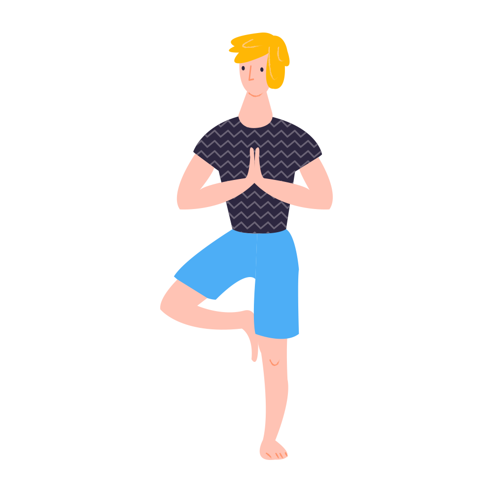

Tree – Vrksasana

The Tree yoga pose may seems as another easy posture but it is not a resting asana. Your back should be aligned property (extended), your hips should be at one level, and since your stability depends on the distribution of your weight on your standing leg ensure you do while maintaing and improving your balance.